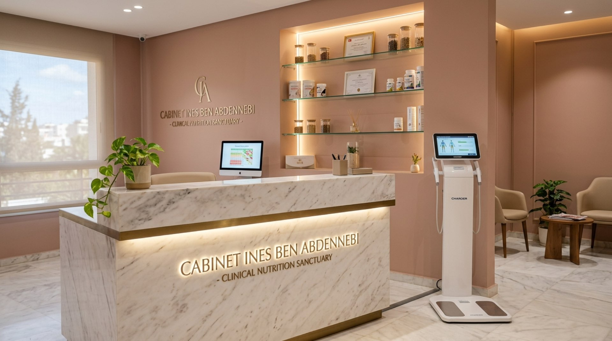

Accompagnement nutritionnel sur-mesure pour enfants, adultes et personnes âgées. Retrouvez vitalité, sérénité et équilibre métabolique avec une prise en charge attentionnée à chaque étape de la vie.
Suivi personnalisé adapté aux besoins spécifiques des enfants, personnes âgées et adultes au cabinet à Radès.
La prise de poids, l'épuisement ou les troubles digestifs ne sont pas des manques de volonté. Ce sont des signaux d'alarme biologiques. Nous arrêtons de traiter le symptôme pour enfin réparer la cause racine.
Des programmes ciblés élaborés selon vos bilans biologiques et votre cartographie métabolique.
Spécialiste de l'alimentation de l'enfant et de l'adolescent : croissance, surpoids infantile, néophobie et équilibre scolaire.
DÉCOUVRIR LE PROTOCOLESpécialiste du suivi des seniors : prise en charge de la sarcopénie (fonte musculaire), vitalité osseuse, prévention de la dénutrition et confort digestif quotidien.
DÉCOUVRIR LE PROTOCOLEPrise en charge du syndrome du côlon irritable, SIBO, ballonnements et rééquilibrage de la flore intestinale (FODMAP).
DÉCOUVRIR LE PROTOCOLERégulation de l'insuline, syndrome des ovaires polykystiques, dysfonctionnements thyroïdiens et rééquilibrage du cycle.
DÉCOUVRIR LE PROTOCOLEPrise en charge nutritionnelle de la femme enceinte et allaitante : couverture des besoins micro-nutritionnels, diabète gestationnel et post-partum serein.
DÉCOUVRIR LE PROTOCOLEPrise en charge diététique thérapeutique : diabète (Type 1 et 2), hypertension artérielle, dyslipidémies, stéatose hépatique et pathologies inflammatoires.
DÉCOUVRIR LE PROTOCOLEPerte de masse grasse ciblée sans fonte musculaire, rééducation alimentaire globale et stabilisation métabolique durable.
DÉCOUVRIR LE PROTOCOLEConsultations vidéo sécurisées pour les patients en région ou à l'international avec suivi hebdomadaire et plans digitaux.
DÉCOUVRIR LE PROTOCOLEPrise en charge professionnelle, personnalisée et bienveillante à Radès.
"Spécialiste de la prise en charge nutritionnelle des enfants, adolescents et personnes âgées. Ma mission est de vous accompagner avec bienveillance vers un équilibre alimentaire gourmand, sain et adapté à chaque étape de votre vie."
"Prise en charge attentionnée et consultations dédiées pour l'accueil des patients locaux et internationaux."
Prenez rendez-vous au cabinet à Radès ou sollicitez une téléconsultation avec notre équipe.
Lundi – Samedi : 08:30 – 18:30 (Sur RDV)
La première séance dure 60 minutes complètes. Elle comprend un échange approfondi, un bilan de votre composition corporelle et la co-construction de votre plan alimentaire adapté.
Apportez simplement vos bilans sanguins récents (de moins de 6 à 12 mois) si vous en disposez. Inutile d'en prescrire de nouveaux avant le premier RDV.
Oui, nous assurons des téléconsultations sécurisées pour les patients résidant hors de Radès ou à l'international.